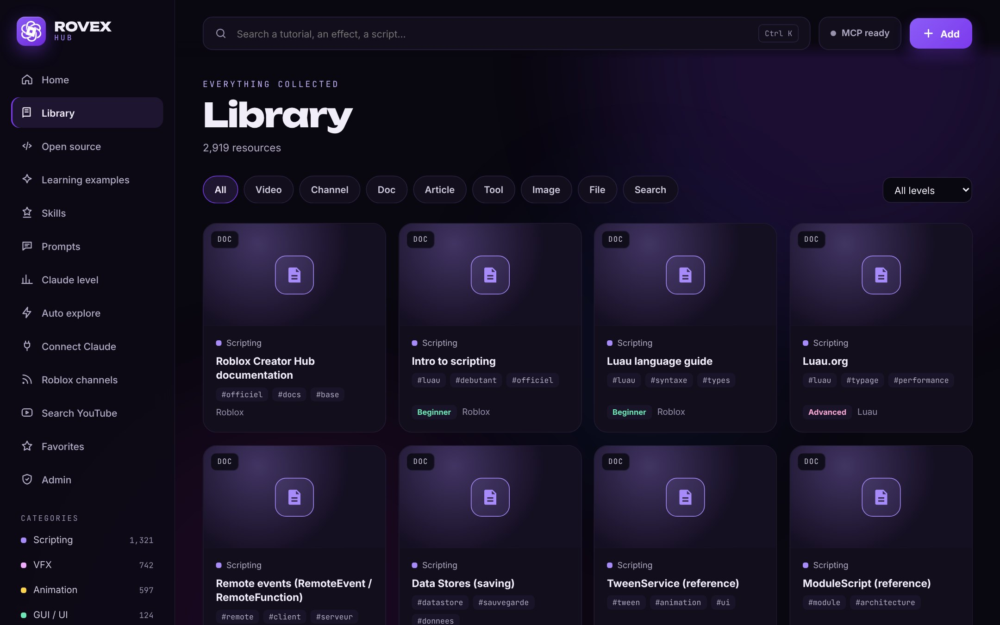
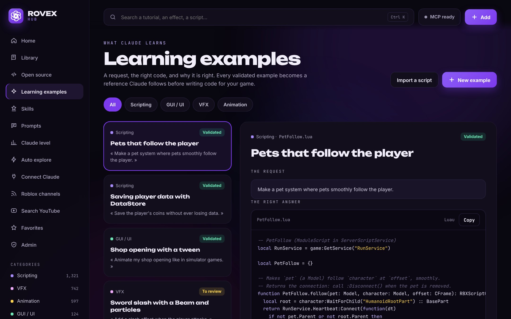
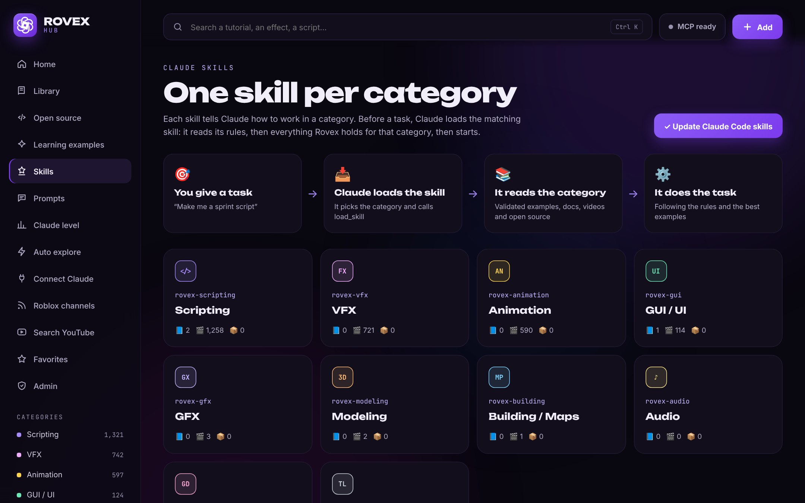
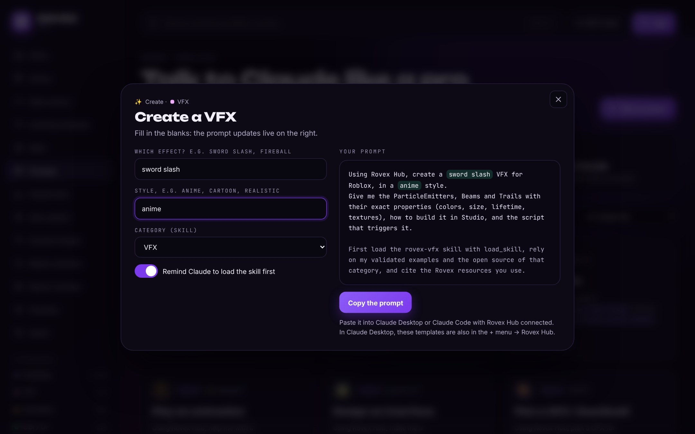

Documentation
What is Rovex Hub?
Rovex Hub is a Windows desktop app that turns Claude into a Roblox expert. It collects thousands of Roblox dev resources (videos, docs, DevForum posts, open source systems), sorts them by category, and serves them to Claude through MCP — the standard way Claude talks to apps.
You keep working in Claude Desktop or Claude Code. When you ask for a Roblox script, a VFX or a UI, Claude first loads the matching Rovex skill, reads your validated examples and the best resources of that category, then writes the code.
Install
- Go to the Download page and click Download for Windows.
- Double-click
Rovex-Hub-Setup-x.y.z.exe. The app installs itself in a few seconds and opens.
- A Rovex Hub icon is added to your desktop and Start menu.
If Windows shows “Windows protected your PC”, click More info then Run anyway. This message appears for new apps that are not signed with a paid certificate yet.
Requirements: Windows 10 or 11 (64-bit), 4 GB of RAM, 500 MB of free space and an internet connection.
Sign in with your ID
Rovex Hub asks for an access ID (it looks like RDH-XXXX-XXXX-XXXX). You get it on our Discord after choosing a plan. Type it in and press Sign in.
- Your ID is personal: do not share it. A shared ID can be blocked.
- You stay signed in until your plan ends. The Immortal plan never expires.
- The language can be changed on the sign-in screen and in the sidebar (English, Français, Español, Português).
Claude Desktop
Nothing to configure. When Rovex Hub starts, it detects Claude Desktop and adds itself to its MCP servers (your other servers are kept, and a backup of the config is saved).
- Open Rovex Hub once.
- Fully quit Claude Desktop: right-click its icon next to the clock → Quit.
- Reopen Claude Desktop. The Rovex tools appear in the tools menu.
The Connect Claude page of the app shows the status: Added — restart Claude Desktop, then Active once Claude has used Rovex.
Rovex Hub keeps running next to the clock when you close its window, so Claude stays connected. Right-click the icon to quit.
Claude Code
If Claude Code is installed, Rovex Hub connects to it automatically and installs the Rovex skills in ~/.claude/skills. You can also do it by hand:
claude mcp add --scope user --transport http rovex-hub http://localhost:4747/mcp
Ask Claude
Just talk to Claude normally, starting with “Using Rovex Hub”:
Using Rovex Hub, make me a pet system that follows the player, with a shop to buy pets.
Claude picks the category, loads the skill, reads the examples and cites the Rovex resources it used. Ready-made prompts are on the Prompts page.
Library
Every resource collected by Rovex, sorted into categories: Scripting, VFX, Animation, GUI / UI, GFX, Modeling, Building / Maps, Audio, Game design and Tools. Filter by type (video, doc, article, tool…) and level, search with Ctrl K, and open any resource for its details.
The library grows on its own: an algorithm searches YouTube, the DevForum and the Roblox community every hour, keeps only real dev content (no trolling, gameplay or cheats) and sends it to your app.

Open source
A separate page for free systems: GitHub repositories sorted by stars, community resources from the DevForum, and free models and plugins from the Creator Store. Claude can search it too, to suggest an existing module instead of rewriting one.
Learning examples
Each example is a request, the right Luau code and the reasons it is right. Validated examples are served to Claude first, so it follows proven structures before writing code for your game.

Skills
There is one skill per category. Before a task, Claude loads the right one: the rules of that category, every validated example with its code, the best learning resources and the top open source projects. Example: you ask for a script → Claude loads rovex-scripting, reads everything in Scripting, then starts.
- Claude Desktop: skills are also in the + menu → Rovex Hub (
rovex-scripting, rovex-vfx…).
- Claude Code: skills are installed automatically and used whenever a task matches.

Prompts
21 ready-made templates to get the most out of Rovex: build a system, save player data, create a VFX, design a UI, fix a bug, review a script, learn a concept, find tutorials or open source… Pick one, fill in the blanks, copy it and paste it into Claude. The prompt also reminds Claude to load the right skill.

Claude level
See how well Claude understands Roblox with your Rovex Hub: a level, XP, mastery per category, badges and a progress curve. Claude does not rewrite itself — the level measures the knowledge Rovex gives it and how much it uses it.
Updates
Rovex Hub updates itself: it checks for new versions at launch and every few hours, downloads them in the background and offers to restart. You never need to reinstall. The library, the skills and the examples are updated continuously.
Plans & access
- Monthly — €35 per month.
- Yearly — €299 per year.
- Immortal — €528.99 once, access forever.
All plans unlock the whole app. Purchases happen on our Discord, where you receive your access ID. When a plan ends, the ID stops working: renew it on the Discord to get your access back.
Troubleshooting
Claude does not see Rovex Hub
Fully quit Claude Desktop (right-click its icon next to the clock → Quit, or end “Claude” in the Task Manager), then reopen it. If it still does not work, open the Connect Claude page of the app and click Check again.
“Unknown ID”, “ID expired” or “ID blocked”
Check that you typed the ID correctly (letters and dashes). If your plan has ended, renew it on the Discord.
“Cannot reach the Rovex server”
Signing in needs internet. Check your connection and try again.
The installer says the file is in use
The download is not finished yet (the file should be about 115 MB). Wait for it to complete, or for Windows Defender to finish scanning it, then try again.
Something else
Ask us on the Discord with a screenshot.
Privacy
Your library, notes, favorites and examples are stored on your PC (%APPDATA%\Rovex Hub) and are kept across updates. Only your access ID is checked online when you sign in. Claude only receives the excerpts it asks for.
Documentation
C’est quoi Rovex Hub ?
Rovex Hub est une app de bureau Windows qui transforme Claude en expert Roblox. Elle rassemble des milliers de ressources de dev Roblox (vidéos, docs, posts du DevForum, systèmes open source), les range par catégorie et les sert à Claude via MCP — la façon standard dont Claude parle aux apps.
Tu continues de travailler dans Claude Desktop ou Claude Code. Quand tu demandes un script Roblox, un VFX ou une interface, Claude charge d’abord le skill Rovex qui correspond, lit tes exemples validés et les meilleures ressources de la catégorie, puis écrit le code.
Installation
- Va sur la page Télécharger et clique sur Télécharger pour Windows.
- Double-clique sur
Rovex-Hub-Setup-x.y.z.exe. L’app s’installe en quelques secondes et s’ouvre.
- Une icône Rovex Hub est ajoutée sur ton bureau et dans le menu Démarrer.
Si Windows affiche « Windows a protégé votre ordinateur », clique sur Informations complémentaires puis Exécuter quand même. Ce message apparaît pour les nouvelles apps qui ne sont pas encore signées avec un certificat payant.
Configuration : Windows 10 ou 11 (64 bits), 4 Go de RAM, 500 Mo d’espace libre et une connexion internet.
Se connecter avec son ID
Rovex Hub demande un ID d’accès (il ressemble à RDH-XXXX-XXXX-XXXX). Tu le reçois sur notre Discord après avoir choisi un plan. Tape-le et clique sur Se connecter.
- Ton ID est personnel : ne le partage pas. Un ID partagé peut être bloqué.
- Tu restes connecté jusqu’à la fin de ton plan. Le plan Immortel n’expire jamais.
- La langue se change sur l’écran de connexion et dans la barre latérale (English, Français, Español, Português).
Claude Desktop
Rien à configurer. Au lancement, Rovex Hub détecte Claude Desktop et s’ajoute à ses serveurs MCP (tes autres serveurs sont gardés, et une copie de la config est sauvegardée).
- Ouvre Rovex Hub une fois.
- Quitte complètement Claude Desktop : clic droit sur son icône à côté de l’heure → Quitter.
- Rouvre Claude Desktop. Les outils Rovex apparaissent dans le menu des outils.
La page Connexion Claude de l’app montre l’état : Ajouté — redémarre Claude Desktop, puis Actif quand Claude a utilisé Rovex.
Rovex Hub reste à côté de l’heure quand tu fermes sa fenêtre, pour que Claude reste connecté. Clic droit sur l’icône pour quitter.
Claude Code
Si Claude Code est installé, Rovex Hub s’y connecte tout seul et installe les skills Rovex dans ~/.claude/skills. Tu peux aussi le faire à la main :
claude mcp add --scope user --transport http rovex-hub http://localhost:4747/mcp
Demander à Claude
Parle à Claude normalement, en commençant par « En utilisant Rovex Hub » :
En utilisant Rovex Hub, fais-moi un système de pets qui suivent le joueur, avec une boutique pour en acheter.
Claude choisit la catégorie, charge le skill, lit les exemples et cite les ressources Rovex utilisées. Des prompts tout prêts t’attendent sur la page Prompts.
Bibliothèque
Toutes les ressources collectées par Rovex, rangées par catégorie : Scripting, VFX, Animation, GUI / UI, GFX, Modélisation, Build / Maps, Audio, Game design et Outils. Filtre par type (vidéo, doc, article, outil…) et par niveau, cherche avec Ctrl K et ouvre chaque ressource pour voir ses détails.
La bibliothèque grandit toute seule : un algorithme fouille YouTube, le DevForum et la communauté Roblox chaque heure, ne garde que le vrai contenu de dev (pas de troll, de gameplay ni de triche) et l’envoie dans ton app.
Open source
Une page à part pour les systèmes gratuits : dépôts GitHub triés par étoiles, ressources communautaires du DevForum, modèles et plugins gratuits du Creator Store. Claude peut aussi y chercher, pour te proposer un module existant plutôt que d’en réécrire un.
Exemples d’apprentissage
Chaque exemple, c’est une demande, le bon code Luau et pourquoi il est bon. Les exemples validés sont servis à Claude en priorité : il suit des structures qui marchent avant d’écrire le code de ton jeu.
Skills
Il y a un skill par catégorie. Avant une tâche, Claude charge le bon : les règles de la catégorie, tous les exemples validés avec leur code, les meilleures ressources et les meilleurs projets open source. Exemple : tu demandes un script → Claude charge rovex-scripting, lit tout ce qu’il y a dans Scripting, puis se lance.
- Claude Desktop : les skills sont aussi dans le menu + → Rovex Hub (
rovex-scripting, rovex-vfx…).
- Claude Code : les skills sont installés automatiquement et utilisés dès qu’une tâche correspond.
Prompts
21 modèles prêts à l’emploi pour tirer le maximum de Rovex : créer un système, sauvegarder les données, faire un VFX, une interface, corriger un bug, relire un script, apprendre une notion, trouver des tutos ou de l’open source… Choisis-en un, remplis les trous, copie-le et colle-le dans Claude. Le prompt rappelle aussi à Claude de charger le bon skill.
Niveau de Claude
Regarde à quel point Claude comprend Roblox avec ton Rovex Hub : un niveau, de l’XP, la maîtrise par catégorie, des badges et une courbe de progression. Claude ne se modifie pas lui-même — le niveau mesure le savoir que Rovex lui apporte et à quel point il s’en sert.
Mises à jour
Rovex Hub se met à jour tout seul : il cherche les nouvelles versions au lancement et toutes les quelques heures, les télécharge en arrière-plan et te propose de redémarrer. Tu n’as jamais besoin de réinstaller. La bibliothèque, les skills et les exemples sont mis à jour en continu.
Plans & accès
- Mensuel — 35 € par mois.
- Annuel — 299 € par an.
- Immortel — 528,99 € une fois, accès pour toujours.
Tous les plans débloquent toute l’app. L’achat se fait sur notre Discord, où tu reçois ton ID d’accès. À la fin d’un plan, l’ID ne marche plus : renouvelle-le sur le Discord pour retrouver ton accès.
Problèmes fréquents
Claude ne voit pas Rovex Hub
Quitte complètement Claude Desktop (clic droit sur son icône à côté de l’heure → Quitter, ou termine « Claude » dans le Gestionnaire des tâches), puis rouvre-le. Si ça ne marche toujours pas, ouvre la page Connexion Claude de l’app et clique sur Revérifier.
« ID inconnu », « ID expiré » ou « ID bloqué »
Vérifie que tu as bien tapé l’ID (lettres et tirets). Si ton plan est terminé, renouvelle-le sur le Discord.
« Impossible de joindre le serveur Rovex »
La connexion demande internet. Vérifie ta connexion et réessaie.
L’installeur dit que le fichier est utilisé
Le téléchargement n’est pas encore fini (le fichier fait environ 115 Mo). Attends qu’il se termine, ou que Windows Defender finisse de l’analyser, puis réessaie.
Autre chose
Demande-nous sur le Discord avec une capture d’écran.
Confidentialité
Ta bibliothèque, tes notes, tes favoris et tes exemples sont stockés sur ton PC (%APPDATA%\Rovex Hub) et sont gardés lors des mises à jour. Seul ton ID d’accès est vérifié en ligne à la connexion. Claude ne reçoit que les extraits qu’il demande.